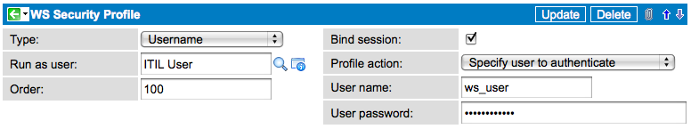

Inbound SOAP Web Service Security
| |
Note: This article applies to Fuji and earlier releases. For more current information, see SOAP Web Services at http://docs.servicenow.com
The ServiceNow Wiki is no longer being updated. Visit http://docs.servicenow.com for the latest product documentation. |
Contents
1 Overview
ServiceNow enforces web service security using a combination of basic authentication challenge/response over the HTTP protocol and system level access control using the Contextual Security. Administrators can control what system resources web services users can access by granting them one of the SOAP roles.
2 Basic Authentication
To enforce basic authentication for the user associated with the instance for each WSDL or SOAP message request, administrators can set the property glide.basicauth.required to true. When enabled, each WSDL and SOAP request must contain an "Authorization" header as specified in the Basic Authentication protocol. Because web services requests are non-interactive, ServiceNow always requires the Authorization header during a request.
| |
Note: Basic Authentication refers to local credentials or LDAP authentication, if configured. |
Supplying basic authentication information with every request (whether or not it is required) has the added advantage that ServiceNow can associate Web Service invocations with the user supplied in the basic authentication credentials. For example, when creating an Incident record, the journal fields lists the user ID contained in the basic authentication header instead of the default Guest user.
| View code samples |
|---|
|
To supply basic authentication when using Perl and the SOAP::Lite libraries, you can implement the following function: sub SOAP::Transport::HTTP::Client::get_basic_credentials {
return 'user_name' => 'password';
}
System.Net.ICredentials cred = new System.Net.NetworkCredential("user_name", "password");
service.ServiceNow proxy = new service.ServiceNow();
service.get getService = newservice.get();
service.getResponse getServiceResponse = new service.getResponse();
try
{
proxy.Credentials = cred;
getService.sys_id = "bf522c350a0a140701972dbf876f1610";
getServiceResponse = proxy.get(getService);
catch (Exception ex) { }
Demo_Incident.ServiceNowSoapClient client = new Test08WebService.Demo_Incident.ServiceNowSoapClient();
client.ClientCredentials.UserName.UserName = "admin";
client.ClientCredentials.UserName.Password = "admin";
Then in your app.config file look for the following and change "None" to "Basic": <transport clientCredentialType="None" proxyCredentialType="None" realm="" />
Sub Main()
Dim cred As New System.Net.NetworkCredential("user_name", "password")
Dim proxy As New VB_Democm.incident.ServiceNow
Dim getIncident As New VB_Democm.incident.get
Dim getResponse As New VB_Democm.incident.getResponse
proxy.Credentials = cred
getIncident.sys_id = "[your sysID here]"
getResponse = proxy.get(getIncident)
End Sub
The resulting response when Basic Authentication is turned on and no credentials are supplied looks like this: <html>
<head>
<title>Apache Tomcat/5.0.28 - Error report</title>
<style> <!--H1 {font-family:Tahoma,Arial,sans-serif;color:white;background-color:#525D76;font-size:22px;}
H2 {font-family:Tahoma,Arial,sans-serif;color:white;background-color:#525D76;font-size:16px;}
H3 {font-family:Tahoma,Arial,sans-serif;color:white;background-color:#525D76;font-size:14px;}
BODY {font-family:Tahoma,Arial,sans-serif;color:black;background-color:white;}
B {font-family:Tahoma,Arial,sans-serif;color:white;background-color:#525D76;}
P {font-family:Tahoma,Arial,sans-serif;background:white;color:black;font-size:12px;}
A {color: black;}
A.name {color: black;}
HR {color: #525D76;}-->
</style>
</head>
<body>
<h1>HTTP Status 401 -\</h1>
<HR size="1" noshade="noshade">
<p><b>type</b> Status report</p>
<p><b>message</b> <u></u></p>
<p><b>description</b>
<u>This request requires HTTP authentication ().</u></p>
<HR size="1" noshade="noshade">
<h3>Apache Tomcat/5.0.28</h3>
</body>
</html>
|
3 WS-Security
ServiceNow supports WS-Security 1.1 to validate signed Web Services requests. Typically, customers enable WS-Security to:
- Verify SOAP messages originate from a known sender
- Verify SOAP messages have not been altered in transit
| |
Note: ServiceNow does not use WS-Security as an encryption mechanism. ServicesNow relies on the HTTPS protocol to encrypt all communications. |
WS-Security is intended to work in conjunction with basic authentication. When ServiceNow receives a SOAP message, it reviews the basic authentication header to determine if the SOAP user has rights to the instance. It reviews the WS-Security header to determine the validity of the incoming message. Requests affected by attacks such as a man-in-the-middle attack have an invalid WS-Security header and are blocked.
3.1 Enabling WS-Security Verification
Administrators can enable Web Services Security (WSS) verification from the Web Services system properties.
- Navigate to System Web Services > Properties.
- For Require WS-Security header verification for all incoming SOAP requests, select Yes.
-
- Click Save.
- Create a WS-Security profile.
- Update the user record for the MID Server and ODBC Driver to mark these users as internal integration users.
- Download and install the latest MID Server and ODBC Driver.
- To validate SOAP request signatures, upload the remote Web Service's certificate as a JKS and create the Web Service's WSS Username Token Profile.
{kind=link}
| |
Note: Because ServiceNow's WSS implementation does not verifying the CA certificate, you do not need to upload the Web service's CA certificate. |
3.1.1 Marking Service Accounts as Internal Integration Users
Enabling WSS requires authentication for all SOAP requests including internal integration communications such as the MID Server, ODBC Driver, Remote Update Sets, and high availability cloning. SOAP requests for these internal integration communications cannot implement WSS due to technical implications. If your instance uses these SOAP interfaces, you can allow them to bypass the WSS authentication requirement by marking their user accounts as internal integration users (Dublin release).
- Navigate to User Administration > Users.
- Select the user account for the MID Server or ODBC Driver.
- Configure the form to add the Internal Integration User field.
- Select the Internal Integration User check box.
- Click Update.
3.2 WS Security Profiles
A WS Security profile determines how ServiceNow authenticates a Web Services message when WS-Security is enabled. ServiceNow can authenticate Web Services requests with the following mechanisms:
- Certificate verification: ServiceNow authenticates the Web Services request by verifying the certificate associated with the request. Verifying the request's certificate requires uploading the requestor's certificate and certificate authority.
- User credentials: ServiceNow authenticates the Web Services request by verifying the user credentials associated with the request. ServiceNow can either verify that the request's credentials match an an existing ServiceNow user's credentials or that the request's credentials match a username and password provided in the profile record.
You specify which authentication mechanism you want to use when creating a new WS Security Profile.
To create a new WS Security profile:
- Navigate to System Web Services > WS Security Profiles.
- Click New.
- Fill in the WS Security Profile form (see table).
- Click Submit.
| Field | Description |
|---|---|
| Name | Enter a unique name for the security profile. |
| Type | Select X509 to verify the request's certificate. Select Username to verify the request's user credentials. |
| Run as user | Select the ServiceNow user the instance will impersonate if authentication succeeds and the Bind Session field is selected. All Web Services requests will be attributed to this user. For example, if you select the System Administrator user then the instance treats all Web Services operations as being done by the system administrator. Make sure the user you select has appropriate SOAP privileges if you are using the glide.soap.strict_security high security setting. This field is only visible when the type is X509. |
| Order | Enter the order in which the instance checks security profiles. The instance checks all security profiles when processing an incoming SOAP request. If a request fails any security profile authentication requirement, the instance stops processing additional security profiles and fails the request. |
| Bind Session | Select this checkbox to have the instance impersonate the user listed in the Run as user field. You should only set this field for one profile at a time. If multiple profiles have this field selected, ServiceNow impersonates the user from the last successfully authenticated WS-Security profile. If no profile has this field selected, ServiceNow impersonates the user provided with the basic authentication headers or impersonates the default user (guest). |
| X509 Certificate | Select the certificate record containing the certificate for Web Service requests. ServiceNow only validates the request signature. It automatically trusts the certificate's certificate authority (CA). This field is only visible when the type is X509. |
| Profile action | Select how you want the instance to authenticate the user credentials. Select Authenticate with user if you want the instance to authenticate the request based on an existing user record. The request's credentials must match values in an existing user record. Select Specify user to authenticate if you want to list a user name and password combination that all Web Services requests must meet. The request's credentials must match the user name and password you list. This field is only visible when the type is Username. |
| User field to match UserName | Select the column from the User [sys_user] table containing the value you want match against the request's UserName. For example, if you select Email then the request UserName header must contain an email address matching an existing ServiceNow user. This field is only visible when the profile action is Authenticate with user. |
| User name | Enter the user name that all Web Services requests must contain. This field is only visible when the profile action is Username. |
| User password | Enter the password that all Web Services requests must contain. This field is only visible when the profile action is Username. |
{kind=link}
The WS Security Profile module lists the WS-Security profiles that are currently in effect.
{kind=link}
3.2.1 WSS X.509 Token Profile
Use the X.509 authentication framework as defined by the Web Services Security: SOAP Message Security specification. An X.509 certificate specifies a binding between a public key and a set of attributes that includes (at least) a subject name, issuer name, serial number and validity interval. An X.509 certificate is used to validate a public key that is used to sign the incoming SOAP message. Upload the certificate and reference it in the X509 Certificate field. If this is a bound session, select the user to impersonate when the WS-Security authentication succeeds.

3.2.2 WSS Username Token Profile
In addition to specifying the X.509 Token Profile, a UsernameToken can also be supplied in the SOAP request. A UsernameToken is used as a means of identifying the requestor by âusernameâ, and optionally using a password (or shared secret, or password equivalent) to authenticate that identity to ServiceNow. The UsernameToken profile cannot be used independent of the X.509 Token Profile currently.
http://www.oasis-open.org/committees/download.php/16782/wss-v1.1-spec-os-UsernameTokenProfile.pdf
- Authenticate using the Username of the incoming SOAP request to lookup a User in ServiceNow by the specified User field to match UserName value. The password value in the incoming Username Token is used to authenticate the request. When the Bind session option is selected, the user that authenticates successfully will be used for the session.
-
- Authenticate using a separate pair of user name / password that is unrelated to users in the User table. When the Bind session option is selected, the user that is specified in the Run as user field will be used for the session.
- Authenticate with specified user name and password credentials
{kind=link}
{kind=link}
3.2.3 Example WS-Security SOAP Envelope Headers
| View SOAP Header | ||
|---|---|---|
<SOAP-ENV:Header>
<wsse:Security
xmlns:wsse="http://docs.oasis-open.org/wss/2004/01/oasis-200401-wss-wssecurity-secext-1.0.xsd"
SOAP-ENV:mustUnderstand="1">
<wsse:BinarySecurityToken
xmlns:wsu="http://docs.oasis-open.org/wss/2004/01/oasis-200401-wss-wssecurity-utility-1.0.xsd"
EncodingType="http://docs.oasis-open.org/wss/2004/01/oasis-200401-wss-soap-message-security-1.0#Base64Binary"
ValueType="http://docs.oasis-open.org/wss/2004/01/oasis-200401-wss-x509-token-profile-1.0#X509v3"
wsu:Id="CertId-2D914AB929A6719E7F13068829874641"
xmlns:wsse="http://docs.oasis-open.org/wss/2004/01/oasis-200401-wss-wssecurity-secext-1.0.xsd">
MIIEgzCCA2ugAwIBAgILAQAAAAABLOZQMtEwDQYJKoZIhvcNAQ
EFBQAwQDEXMBUGA1UEChMOQ3liZXJ0cnVzdCBJbmMxJTAjBg
NVBAMTHEN5YmVydHJ1c3QgU3VyZWNyZWRlbnRpYWwgQ0Ew
HhcNMTAxMjE0MTgyMjU1WhcNMTECMjE0MTgyMjU1WjB3MQsw
CQYDVQQGEwJVUzEUMBIGA1UEChMLU2VydmljZS1Ob3cxKDA
mBgkqhkiG9w0BCQEWGWRhdmlkLmxvb0BzZXJ2aWNlLW5vdy5jb
20xKDAmBgNVBAMTH1NlcnZpY2UtTm93IFBhcn3uZXIgRGV2ZWx
vcG1lbnQwggEiMA0GCSqGSIb3DQEBAQUAA4IBDwAwggEKAoIB
AQCvtcRIb6zkGnN9uyhtcSDNSIuCW6FgnTbTDUvw2nGlNA9y9iEV
wTp5TG3eELOOFBCuRLeY5x28lN+cJ72v+zCwi/rZcbEPj8oWyLVA
OqJThgrzhDabj0vDM/zU8bvAXcw6FoCUDFKkc64WC7Y4HpBdfW4
JT7FBgDQ3LEudq80Up+TfETiGwrEA3jRgy9fF92TKD7MN3Vkyhz2
xZLOFiN5HJixl9juNJmLWugqqIG04yZSuCutc1gjCy0U+f0NXKgh0Q
rRheNpwcqWbbJvLbR9Ybso6l3UAYCQ09hrRnI7VaPvfiueUvuLopap
o4Kel6iL8aMUAfEUDtkf1AbqRIIQ5AgMBAAGjggFFMIIBQTAfBgNVH
SMEGDAWgBRJTJILzUojts557p5VM2taRMAClTA7BgNVHR8ENDA
yMDCgLqAshipodHRwOi8vY3JsLm9tbmlyb290LmNvbS9TdXJlQ3JlZ
GVudGlhbC5jcmwwHQYDVR0OBBYEFB+OqlvcdiYmq0enW6mgaV
wZp9eaMA8GA1UdEwEB/wQFMAMCAQAwDgYDVR0PAQH/BAQD
AgTwMBEGCWCGSAGG+EIBAQQEAwIFoDBJBg3rBgEFBQcBA1Q
9MDswOQYIKwYBBQUHMAKGLWh0dHA6Ly9jYWNlcnQub21uaXJv
b3QuY29tL3N1cmVjcmVkZW50aWFsLmNydDAkBgNVHREEHTAbg
RlkYXZpZC5sb29Ac2VydmljZS1ub3cuY29tMB0GA1UdJQQWMBQG
CCsGAQUFBwMCBggrBgEFBQcDBDANBgkqhkiG9w0BAQUFAAO
CAQEAmeoP0Bgtx2JN1ldLnnK6WLEqDk25zaHP5wTxqVlFxzJy1zi6
A0lk5U0T5LKYjjGWRIOoSeK8iBU0p7Mq4PE8QCETkjYNyuWJd9zm
7GPCHdOoL18rQHQRsU8pTDHA10zG+i3zdxAMrHl/H673E4myzvU
DkJnxNAZdw4h4Ba/Y1+VFCWhOm2GwZdXtzklyZaKtMp+31qmf3bG
OSU34M/dW40pXgfLDqdGD+6YDQPg25aYeCqcNhwg6VlAWG566g
aWXYxRaVj0qotSDMdaK8b+7Vlo7KhGGaE62v7f44OSekJeBvTfZCR
7zRSK8N+0qUpqP/n8vgDkmYIE5IQrRE0rEWA==
</wsse:BinarySecurityToken>
<ds:Signature xmlns:ds="http://www.w3.org/2000/09/xmldsig#"
Id="Signature-2">
<ds:SignedInfo xmlns:ds="http://www.w3.org/2000/09/xmldsig#">
<ds:CanonicalizationMethod
Algorithm="http://www.w3.org/2001/10/xml-exc-c14n#" xmlns:ds="http://www.w3.org/2000/09/xmldsig#" />
<ds:SignatureMethod Algorithm="http://www.w3.org/2000/09/xmldsig#rsa-sha1"
xmlns:ds="http://www.w3.org/2000/09/xmldsig#" />
<ds:Reference URI="#Timestamp-1" xmlns:ds="http://www.w3.org/2000/09/xmldsig#">
<ds:Transforms xmlns:ds="http://www.w3.org/2000/09/xmldsig#">
<ds:Transform Algorithm="http://www.w3.org/2001/10/xml-exc-c14n#"
xmlns:ds="http://www.w3.org/2000/09/xmldsig#" />
</ds:Transforms>
<ds:DigestMethod Algorithm="http://www.w3.org/2000/09/xmldsig#sha1"
xmlns:ds="http://www.w3.org/2000/09/xmldsig#" />
<ds:DigestValue xmlns:ds="http://www.w3.org/2000/09/xmldsig#">NIS5sizg8wttGL+aWFQ4003TpPg=</ds:DigestValue>
</ds:Reference>
<ds:Reference URI="#id-3" xmlns:ds="http://www.w3.org/2000/09/xmldsig#">
<ds:Transforms xmlns:ds="http://www.w3.org/2000/09/xmldsig#">
<ds:Transform Algorithm="http://www.w3.org/2001/10/xml-exc-c14n#"
xmlns:ds="http://www.w3.org/2000/09/xmldsig#" />
</ds:Transforms>
<ds:DigestMethod Algorithm="http://www.w3.org/2000/09/xmldsig#sha1"
xmlns:ds="http://www.w3.org/2000/09/xmldsig#" />
<ds:DigestValue xmlns:ds="http://www.w3.org/2000/09/xmldsig#">/rXB+nhBT5BXtDErIUIBOyhoh8Y=</ds:DigestValue>
</ds:Reference>
</ds:SignedInfo>
<ds:SignatureValue xmlns:ds="http://www.w3.org/2000/09/xmldsig#">
fwjxJRiDNrNxbVsKoHZflsmKlYADldJf0BoN3R2Fx9rjpszFXI2Gp92eXsP+Sl6rmbPXIdKb8lLl
+dv8upl8WYPrKJP61KeJ0ZsKNDX474NYC2XEzdJcXbZNktmqY0dSmKwJZzi8rJtmGrbOUAaH51GK
oXV2FLJ0AqILoZMyP/SPWKbOUNUCpssY7vRA+tX8ZmrjTwMUvpOZbo+KInPmwfpZ6n/uarOh5zjL
NaYJylTCjuuqXDKPZLvDqy48yrsGAWczB901KwLLrE8C+6aPucFrTBytX91vIhaWiLZuba8Nouaz
vUkjUk7LM5o87MGrSFx3OwxbaOD7/cMtdg2bxA==
</ds:SignatureValue>
<ds:KeyInfo Id="KeyId-2D914AB929A6719E7F13068829875022"
xmlns:ds="http://www.w3.org/2000/09/xmldsig#">
<wsse:SecurityTokenReference
xmlns:wsu="http://docs.oasis-open.org/wss/2004/01/oasis-200401-wss-wssecurity-utility-1.0.xsd"
wsu:Id="STRId-2D914AB929A6719E7F13068829875053"
xmlns:wsse="http://docs.oasis-open.org/wss/2004/01/oasis-200401-wss-wssecurity-secext-1.0.xsd">
<wsse:Reference URI="#CertId-2D914AB929A6719E7F13068829874641"
ValueType="http://docs.oasis-open.org/wss/2004/01/oasis-200401-wss-x509-token-profile-1.0#X509v3"
xmlns:wsse="http://docs.oasis-open.org/wss/2004/01/oasis-200401-wss-wssecurity-secext-1.0.xsd" />
</wsse:SecurityTokenReference>
</ds:KeyInfo>
</ds:Signature>
<wsu:Timestamp
xmlns:wsu="http://docs.oasis-open.org/wss/2004/01/oasis-200401-wss-wssecurity-utility-1.0.xsd"
wsu:Id="Timestamp-1">
<wsu:Created>2011-05-31T23:03:07.454Z</wsu:Created>
<wsu:Expires>2011-05-31T23:08:07.454Z</wsu:Expires>
</wsu:Timestamp>
<wsse:UsernameToken>
<wsse:Username>test_user</wsse:Username>
<wsse:Password>xxxxxx</wsse:Password>
</wsse:UsernameToken>
</wsse:Security>
</SOAP-ENV:Header>
|
3.3 SOAP Security Policies
The Enhanced Web Service Provider - Common plugin adds the SOAP Security Policies module to the System Web Services application. This module allows administrators to set the following security policies.
- Enable or disable signing SOAP requests when consuming an external web service
- Specify the authentication requirements SOAP requests must meet when communicating over WS-Security.
SOAP security policies are available with the Dublin release.
{kind=link}
3.3.1 Activating the Plugin
Administrators can activate the Enhanced Web Service Provider - Common plugin to enable unsigned WS-Security requests and specify what authentication requirements SOAP requests have.
| Click the plus to expand instructions for activating a plugin. |
|---|
|
If you have the admin role, use the following steps to activate the plugin.
|
3.3.2 Adding Certificates for Signed Requests
In order to sign SOAP requests for WS-Security communications, ServiceNow requires the following certificates:
- The X.509 certificate from the requester
- The X.509 CA certificate of the certificate authority who signed the requester's certificate
3.3.3 Creating a New Security Policy
Administrators can specify which security profiles WS-Security communications must meet by creating a new security policy.
- Navigate to System Web Services > SOAP Security Policies.
- Click New.
- Fill in SOAP Security Policy form (see table).
- Click Submit.
| Field | Description |
|---|---|
| Name | Enter a unique name for the security policy. Use this name to set the default security policy with the glide.soap.default_security_policy property. |
| Type | Select whether the SOAP security policy applies to inbound or outbound traffic. |
| Required to Sign SOAP Request | Select this checkbox to require signed SOAP requests. Clear the checkbox to allow unsigned SOAP requests. When enabled, the instance will produce an error for any SOAP request that does not include a valid signature. When disabled, the instance still verifies any signature included with a SOAP request. |
| Authenticate | Select if a SOAP request must authenticate against all security profiles or at least one security profile. |
| Security Profiles | Select the security profiles you want to apply to this SOAP security policy. You must select at least one security profile. |
3.3.4 Requiring Signed SOAP Requests
Use the SOAP Security Policy module to specify whether ServiceNow requires signed SOAP requests for all inbound SOAP traffic. By default, all inbound SOAP traffic must be signed. Administrators may want to disable this policy and allow unsigned SOAP requests to ServiceNow Web Services.
- Navigate to System Web Services > SOAP Security Policies.
- Select the Default Policy.
- Clear the Required to Sign SOAP Request checkbox.
- Click Update.
3.3.5 Specifying the Instance SOAP Security Policy
Administrators can specify the SOAP security policy an instance uses with the system property glide.soap.default_security_policy (Dublin).
| Name | Description |
|---|---|
| glide.soap.default_security_policy | Specifies the name of SOAP security policy the instance uses when enforcing Web Services-Security (WSS) for inbound requests.
|
To set the default security profile:
- Navigate to System Web Services > Properties.
- In the Security Policy to enforce if WS-Security is enabled field, enter the default security policy to use when enforcing WS-Security.
- Click Save.
3.3.6 Installed With the Plugin
The Enhanced Web Service Provider - Common plugin installs the following components:
| Component Type | Component Installed |
|---|---|
| Module | Web Services Security Profiles: The plugin adds this module to the System Web Services application. |
| System Property | glide.soap.default_security_policy: Specifies the default security policy to use when enforcing Web Services-Security (WSS) for inbound requests. |
3.4 Enabling WS-Security Logging
Create the following system property to display error messages about WS-Security in the transaction log.
| Property | Description |
|---|---|
| glide.processor.debug.SOAPProcessor | Enables (true) or disables (false) debugging messages for SOAP processing such as certificate and key store checks.
|
3.4.1 WS-Security Error Messages
ServiceNow produces one of the following error messages when it encounters an issue with a WS-Security SOAP message.
| Error | Description / Resolution |
|---|---|
| Invalid Security Policy Selected. Select a Inbound policy for Inbound Requests | The default policy name is set to an outbound policy. Set the default policy name to an inbound security policy. |
| SOAP request not Signed. Policy requires signing | The SOAP security policy requires signing and the inbound SOAP request is not signed. Either specify a different SOAP security policy or provide the SOAP request with a proper signature. |
| No profiles to authenticate | The selected Security policy either does not have any security profiles (X509 or UserNameToken) or the security profiles are inactive. Verify at least one security profile is active. |
| Unable to verify signed request | The inbound SOAP request contains an invalid signature. The SOAP request changed after being signed. |
| Failed to extract principal(s) from request | The SOAP request has either been tampered or was not well formed. ServiceNow cannot extract credentials to authenticate the request. |
| Failed to authenticate WS-Security, unknown type | The SOAP request contains an unsupported security profile. Resend the request with a supported security profile type: X509 or UsernameToken. |
| Failed to authenticate WS-Security | ServiceNow failed to authenticate against the provided profile credentials. Verify that the SOAP request is using the proper credentials. |
4 Web Service User Roles
When basic authentication is required for web services, enabling the glide.soap.strict_security property validates the authenticated SOAP user with Contextual Security as well as validates the SOAP action with the user assigned roles. The following roles are available for securing any inbound SOAP requests:
| Role | Description |
|---|---|
| soap | Full query, create, update, and delete access to all tables, as well as execute scripts |
| soap_query | Query only access to all tables and columns |
| soap_create | New record creation access to all tables and columns |
| soap_update | Update only access to existing tables and columns |
| soap_query_update | Query and update access to all tables and columns |
| soap_delete | Record deletion access to existing records in all tables and columns |
| soap_ecc | Query, create and update access to the ECC Queue table only |
| soap_script | Access to execute scripted web services |
| import_admin | Can manage all aspects of Import Sets and imports. Required for access to the sys_import_set_row table. |
| Import_transformer | Can manage Import Set Transform Maps and run transforms. Required for access to the sys_import_set_row table. |
4.1 Default Role Requirements
By default, a set of processor access control rules require users to have the soap role in order to make WSDL, XSD, and XML Schema requests (Dublin).
{kind=link}
If you want change these role requirements, you can deactivate the ACL rules.
5 Enforcing Strict Security
By default, Web Services basic authentication only determines if a user is authorized to access the instance with a SOAP connection. Once authorized, any user can access any table published as a Web Service. The system property Enforce strict security on incoming SOAP requests changes this behavior and requires users meet Contextual Security requirements to access instance resources from Web Services. With this property enabled, only users that have the proper SOAP role and also meet the access control rule conditions for a given table and operation can perform that operation from a SOAP connection.
To enforce strict security for Web Services connections, navigate to System Properties > Web Services.
{kind=link}
| |
Note: ServiceNow does not support Digital Certificates, Digital Signatures, or other Digested token methods in the SOAP web service calls. |
6 Mutual Authentication
ServiceNow supports mutual authentication for outbound web services. Mutual authentication is not available for inbound web services.
7 SOAP Security Example
As an administrator you can configure web service security for inbound SOAP requests made to the ServiceNow instance. You can also set up web service security to use different certificates for different web service clients. By enabling web service security, you can prevent man-in-the-middle attacks.
- Upload a certificate to the instance.
- Create a WS-security profile.
- Create a security policy.
- Security policies define which WS-security profiles are used to evaluate a particular web service request.
- If no policy is defined, all WS-security profiles are used to evaluate all requests.
- Set the value of the property glide.soap.default_security_policy to the name of the new security policy.
| |
Note: After you configure a WS-security profile or a security policy, validation is performed on all incoming SOAP requests, including from the MID Server or ODBC Driver. Disable validation for these types of requests by marking the service accounts as internal integration users. |
8 Enhancements
8.1 Dublin
- Support for multiple Web Services security profiles. Each security profile determines the requirements SOAP messages must meet in order to be authorized.
- Ability to exclude service accounts from WS-Security requirements by designating the user accounts as internal integration users.
- A set of access control rules restrict access to WSDL, XSD, and XML Schema requests to users with the soap role. See Default Role Requirements.